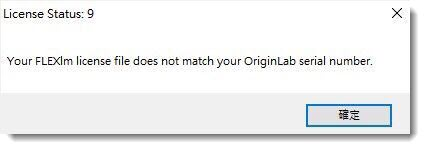

FAQ-1119 "Your FLEXlm license file does not match your OriginLab serial number"というエラーメッセージが表示されます。どうしたらよいでしょうか？
Server-Lic-Not-Match-SN
最終更新日：2021/12/28
Originがライセンスサーバに接続しようとすると以下のようなメッセージが表示される場合
License Status: 9
Your FLEXlm license file does not match your OriginLab serial number.

ライセンスの管理者に問い合わせ、正しいシリアル番号とライセンスサーバー情報をご確認ください。
-
- 誤ったシリアル番号でOriginをインストールしていた場合、こちらのページの操作で正しいものに変更してください。
- シリアル番号とサーバ情報が正しいのにかかわらず、このメッセージが表示される場合、サーバ側にライセンス関連の問題がある可能性があります。ライセンス管理者にお問い合わせいただき、このページを参照して修正してください。
キーワード:SNが一致しない, サーバに接続できない, 3分, ライセンス期限切れ, ネットワーク, 同時起動ライセンス, フローティングライセンス